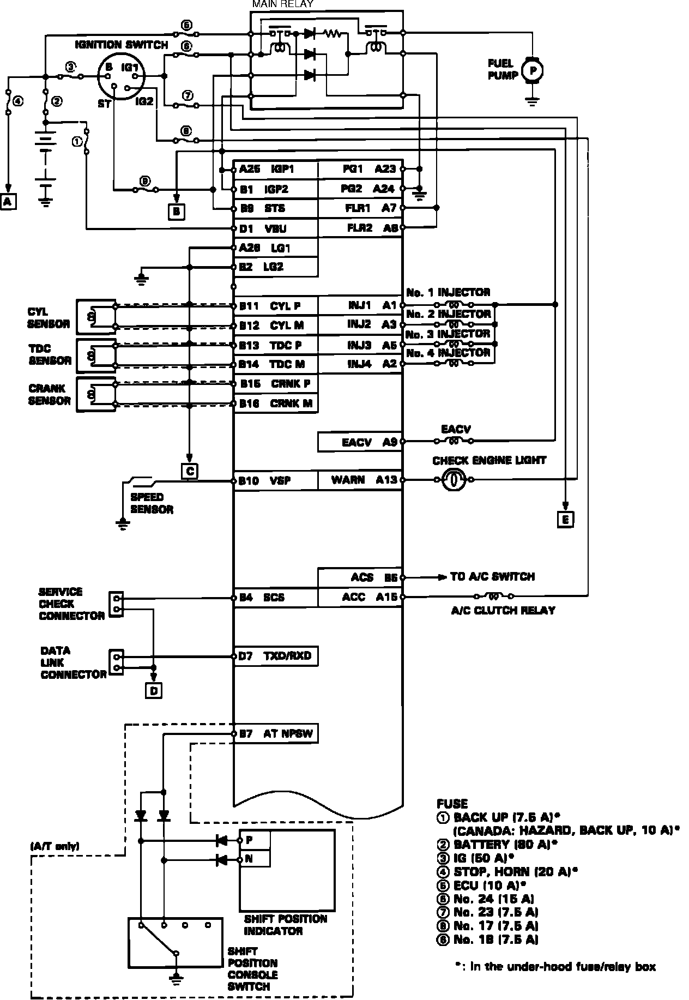
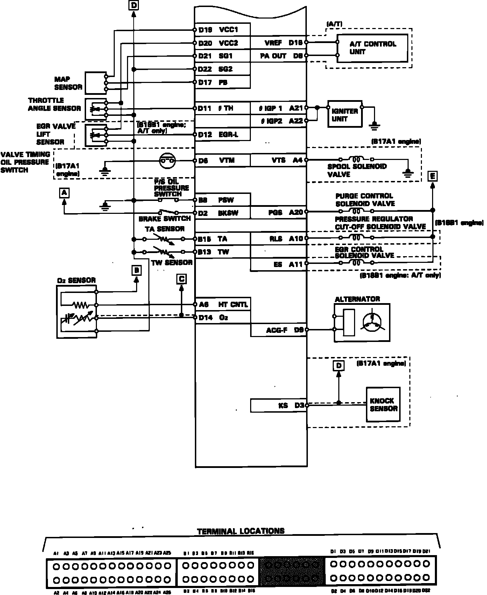
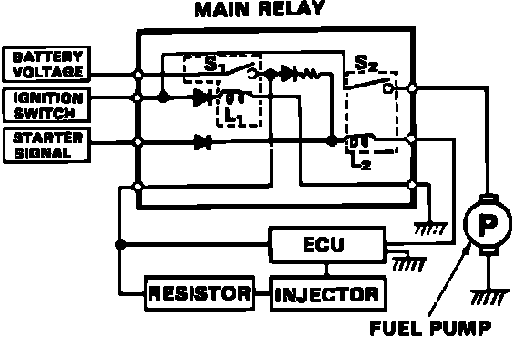

Fuel Delivery and Air Induction
ECU Pin Numbers:

1 OF 2
ECU Pin Connector Numbers:

2 OF 2
ELECTRICAL CONNECTORS
Main Relay:

FUEL PUMP MAIN RELAY DIAGRAM
Fuel Relay Schematic:

FUEL PUMP AND RELAY DIAGRAM
For additional information regarding electrical diagrams, refer to COMPUTERS AND CONTROL SYSTEMS.